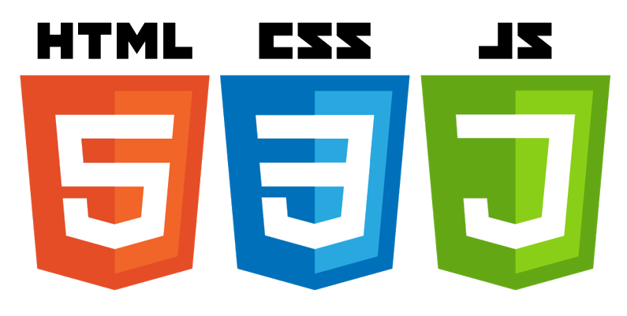

HTML5, CSS3 Y JAVASRIPT
HTML es un lenguaje de etiquetas el cual es el esqueleto de una
pagina web. Junto con CSS, que es una hoja de estilos, se le da
forma al diseño para conseguir tus objetivos y todo lo que desees
añadir en tu página web. Y para finalizar el diseño de tu página
y hacer la perfección web, introduciremos JAVASCRIPT el cual mostrará
un diseño web digno de tus objetivos, ya sean para tu empresa o
personales.

Te ofrecemos una amplia gama de diseños y oportunidades,
y estamos abiertos a tus ideas y gustos para desarrollar tu página web.
JAVA
El lenguaje Java es una lenguaje de programación el cual tiene infinidad de posibilidades,
entre ellas desarrollar aplicaciones, insertar bases de datos en dichas
aplicaciones, crear desde una calculadora hasta la aplicación más sofisticada
que controle cualqueir terminal que puedas imaginar. Tiene un sin fin de
posibilidades y nosotros como buenos emprendedores estamos dispuestos a
trabajar en cualquier aplicación que puedas imaginar. Controlando el proceso
de creación de la misma y poder, tu como cliente, ver el desarrollo de la
misma para dejarla completamente a tu gusto.
SQL
El SQL es un lenguaje declarativo estándar internacional de comunicación
dentro de las bases de datos que nos permite a todos el acceso y manipulación
de datos en una base de datos, y además se puede integrar a lenguajes de
programación. Es por ello por lo que nos hemos especializado también en
este campo, debido a su fácil insercción en los lenguajes de progrmación
y el campo tan amplio que abre por ello. Unicamente nos tiene que facilitar
los datos y nosotros haremos una base de datos la cual pueda generar cualquier
consulta.